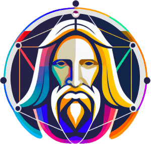

Artificial intelligence (AI)is a branch of computer science that aims to create intelligent agents, which are systems that can reason, learn, and act autonomously. AI research has been highly successful in developing effective techniques for solving a wide range of problems, from game playing to medical diagnosis.
AI has the potential to both benefit and harm society. Some of the potential benefits of AI include increased productivity, improved decision-making, and enhanced creativity. However, AI also poses risks such as job displacement, bias and discrimination, and loss of control.
It is important to be aware of both the potential benefits and risks of AI so that we can make informed decisions about how to develop and use this technology. AI has the potential to make our lives better, but it is important to use it responsibly.
Some Useful AI
Chat-GPT

ChatGPT is a powerful chatbot developed by OpenAI to engage in informative and engaging conversations. Trained on a massive dataset of text and code, ChatGPT can generate realistic and coherent responses, making it suitable for various purposes like customer service, education, and entertainment. ChatGPT is still under development, but it can already follow instructions, answer questions comprehensively, and generate different creative text formats. As it continues to evolve, ChatGPT will become even more versatile and valuable for those seeking informative and engaging interactions.
Click here to log in ChatGPT
BING AI

Bing AI is a large language model developed by Microsoft that is powered by a massive dataset of text and code. It can generate text, translate languages, write different kinds of creative content, and answer your questions in an informative way. Bing AI is available in the Bing search engine and the Microsoft Edge browser. Users can ask Bing AI to perform a variety of tasks, such as generating poems, writing stories, translating texts, answering questions, and creating presentations. Bing AI is still under development, but it has learned to perform many kinds of tasks and is constantly being improved. The benefits of using Bing AI include saving time, being more creative, learning new things, and communicating more effectively.
BING AI
BARD AI

Created by Google, Bard is a conversational AI tool empowered by PaLM 2, a colossal language model with over 540 billion parameters. Its versatility enables it to generate text, translate languages, craft creative content, and answer your questions informatively. Though still under development, Bard has mastered a diverse skillset, meticulously following instructions, thoughtfully fulfilling requests, drawing upon its vast knowledge to provide comprehensive and informative answers, even to open-ended, challenging, or unconventional queries, and generating various creative text formats. Bard aspires to be a helpful and informative companion, continuously expanding its knowledge and capabilities.
BARD AI
Image Creator
powered by DALL-E 3
Image Creator is a powerful tool that allows you to create unique images from text prompts using DALL-E 3, a state-of-the-art AI image generator. With Image Creator, you can generate a wide range of image styles, from realistic to surreal, and use it for a variety of purposes, such as creating illustrations, concept art, product designs, and marketing materials.
Image Creator
powered by DALL-E 3
Lionardo AI

Leonardo AI is a comprehensive AI image generation platform that empowers users to create stunning visuals with ease, offering pre-trained models, custom model training, a robust AI canvas, and advanced 3D texture generation capabilities, enabling users to transcend the boundaries of creativity and bring their visions to life in ways that were previously unimaginable.
Lonardo AI login